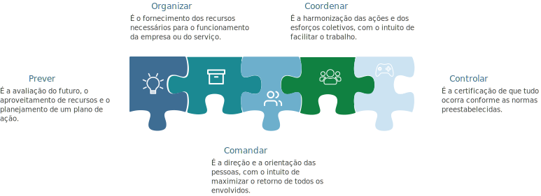

TÓPICO 2
TEORIAS DE LIDERANÇA E SUA APLICABILIDADE NA PRÁTICA
TÓPICO 2
TEORIAS DE LIDERANÇA E SUA APLICABILIDADE NA PRÁTICA
Contextualização
A Teoria Clássica da Administração teve como fundador o francês Henri Fayol, o qual delimitou as funções do administrador, envolvendo as ações de prever, organizar, comandar, coordenar e controlar.
